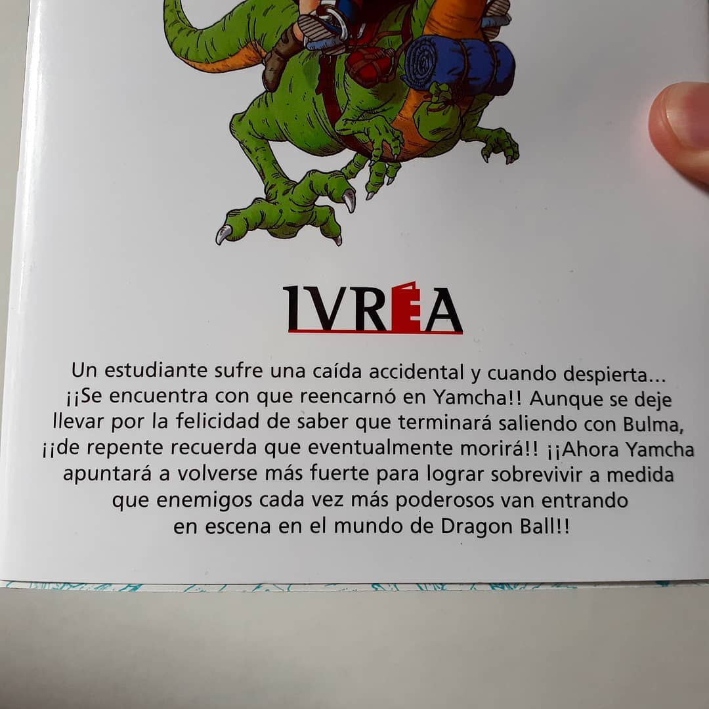
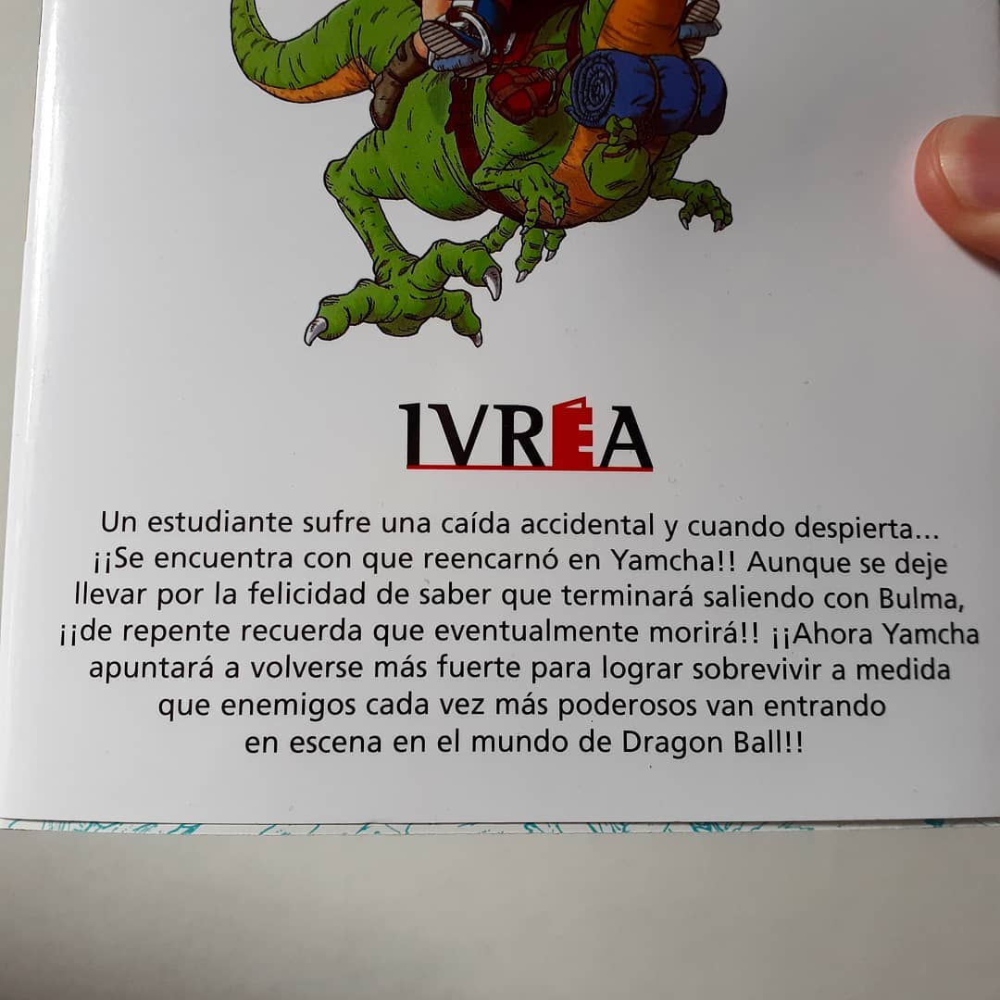

Ustedes lo saben, este último tiempo estuve subiendo varias cosas sobre Dragon Ball. Gracias a la nueva edición a color de Ivrea, una fiebre por la obra de Akira Toriyama resurgió en mí. Habiendo sido un fanático empedernido en mi adolescencia, estas renacidas ganas me llevaron hacia un tomito recientemente editado. ▶️ Un joven de secundaria fanático de Dragon Ball fallece luego de un accidente. Pero este se sorprende al darse cuenta que no estaba en el más allá sino en el cuerpo de Yamcha, un personaje de su manga favorito. A pesar de un primer momento de emoción, se asusta al darse cuenta lo que se acerca para él. Por eso, tendrá que encontrar la manera de sobrevivir aún sabiendo que eso lo aleje de su amada Bulma. ➡️ Dragon Ball al haber influenciado a tantas generaciones ha cosechado una gran base de fans. Muchos de ellos han querido retribuir a este mundo con una creación propia. Este libro es uno de esos. Con una premisa graciosa y un conocimiento grande de la obra original, Dragongarow Lee nos ofrece una aventura más que divertida. 👨🎨 Uno de los problemas que suelen tener estas obras de fanáticos es en el estilo de dibujo y la narrativa ya que estas son generalmente creadas por amateurs. Por suerte, en esta ocasión no tenemos que apenarnos por esto. Si bien contiene fallos con algún que otro personaje, tanto el tono como el estilo de su trabajo se siente realmente dentro del universo toriyamesco. ☕ La historia, por su parte, se detiene en puntos clave de la obra original. Estos puntos son importantes en la historia de Yamcha. Desde la primera vez que aparece hasta pasando por las muertes que este tuvo es interesante como Lee, haciendo gala de su vasto conocimiento de Dragon ball, logra encontrarle formas creíbles para que Yamcha pueda volverse más fuerte y tenga una mínima chance de sobrevivir. En definitiva, Dragon Ball ¡La vez que me reencarné en Yamcha! es una excelente obra por si sos o querés regalarle algo a un fanático empedernido de Dragon Ball. Las referencias abundan e incluso la historia no se termina de entender si no conoces tanto la obra original como Dragon Ball Super (sí, de alguna manera termina haciendolo encajar). Esta obra fue editada por Ivrea. Contiene las tres partes originales más contenido extra. Fuentes: La vez que reencarne en Yamcha Vuela pega y esquiva de Lea Caballero https://youtu.be/Uv2jemPIq34